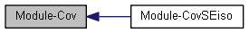

|
OpenGP
1.0
|
|
OpenGP
1.0
|
Covariance Functions
All covariance classes should have public static member functions as follows.
| Public Static Member Functions | Corresponding Covariance Functions |
|---|---|
| +K | \(\mathbf{K} = \mathbf{K}(\mathbf{X}, \mathbf{X}) \in \mathbb{R}^{N \times N}\) |
| +Ks | \(\mathbf{K}_* = \mathbf{K}(\mathbf{X}, \mathbf{Z}) \in \mathbb{R}^{N \times M}\) |
| +Kss | \(\mathbf{k}_{**} \in \mathbb{R}^{M \times 1}, \mathbf{k}_{**}^i = k(\mathbf{Z}_i, \mathbf{Z}_i)\) or \(\mathbf{K}_{**} = \mathbf{K}(\mathbf{Z}, \mathbf{Z}) \in \mathbb{R}^{M \times M}\) |
where \(N\): the number of training data and \(M\): the number of test data given
\[ \mathbf{\Sigma} = \begin{bmatrix} \mathbf{K} & \mathbf{k}_*\\ \mathbf{k}_*^\text{T} & k_{**} \end{bmatrix} \text{, or } \mathbf{\Sigma} = \begin{bmatrix} \mathbf{K} & \mathbf{K}_*\\ \mathbf{K}_*^\text{T} & \mathbf{K}_{**} \end{bmatrix} \]
. More...
|  |
Modules | |
| Module-CovSEiso | |
| Squared Exponential Covariance Functions \[ k(\mathbf{x}, \mathbf{z}) = \sigma_f^2 \exp\left(-\frac{r^2}{2l^2}\right), \quad r = |\mathbf{x}-\mathbf{z}| \] . | |
Classes | |||||||||||||
| class | GP::CovDerObs< Scalar, CovBase > | ||||||||||||
Host class for covariance functions dealing with derivative observations It is the host class which accept and interit a base class for each covariance function as a template parameter and use their public and protected static member functions as follows.
| |||||||||||||
Covariance Functions
All covariance classes should have public static member functions as follows.
| Public Static Member Functions | Corresponding Covariance Functions |
|---|---|
| +K | \(\mathbf{K} = \mathbf{K}(\mathbf{X}, \mathbf{X}) \in \mathbb{R}^{N \times N}\) |
| +Ks | \(\mathbf{K}_* = \mathbf{K}(\mathbf{X}, \mathbf{Z}) \in \mathbb{R}^{N \times M}\) |
| +Kss | \(\mathbf{k}_{**} \in \mathbb{R}^{M \times 1}, \mathbf{k}_{**}^i = k(\mathbf{Z}_i, \mathbf{Z}_i)\) or \(\mathbf{K}_{**} = \mathbf{K}(\mathbf{Z}, \mathbf{Z}) \in \mathbb{R}^{M \times M}\) |
where \(N\): the number of training data and \(M\): the number of test data given
\[ \mathbf{\Sigma} = \begin{bmatrix} \mathbf{K} & \mathbf{k}_*\\ \mathbf{k}_*^\text{T} & k_{**} \end{bmatrix} \text{, or } \mathbf{\Sigma} = \begin{bmatrix} \mathbf{K} & \mathbf{K}_*\\ \mathbf{K}_*^\text{T} & \mathbf{K}_{**} \end{bmatrix} \]
.
The public static member functions, K, Ks and Kss call a protected general member function, K(const Hyp, const MatrixConstPtr, const int) which only depends on pair-wise squared distances.
In addition, no covariance class contains any data. Instead, data are stored in data classes such as
 1.8.7
1.8.7